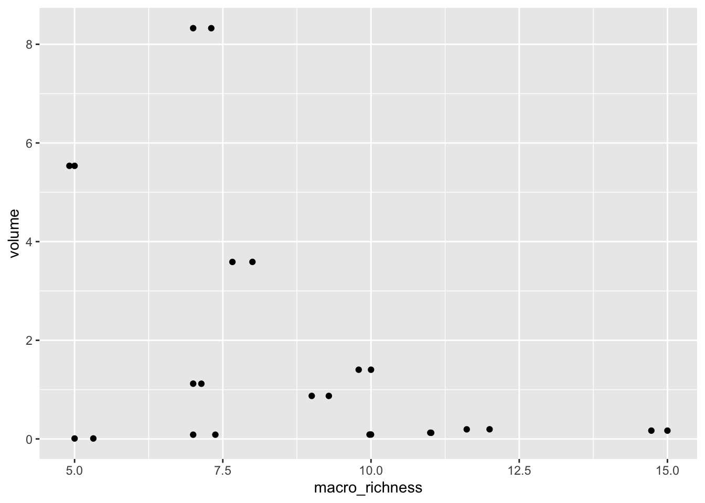
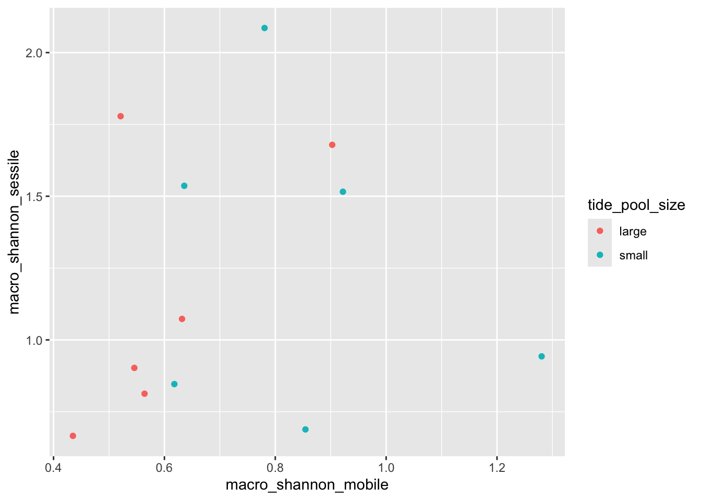
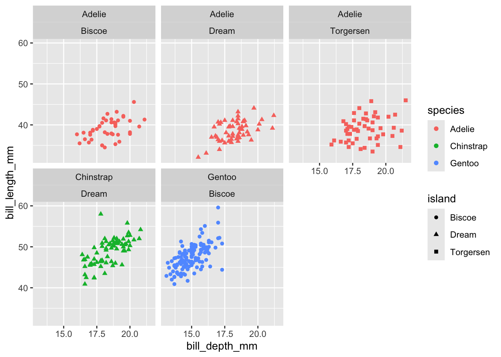
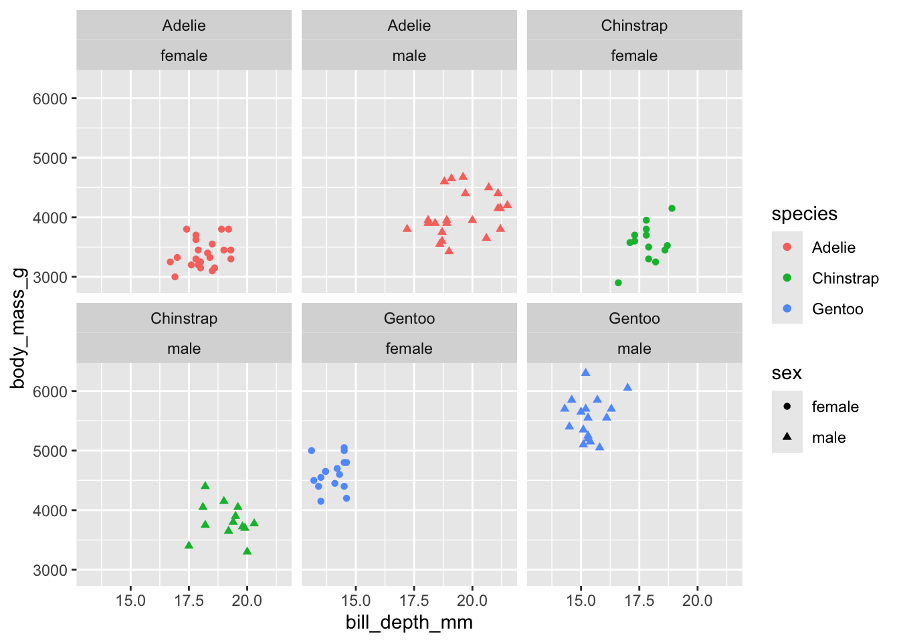
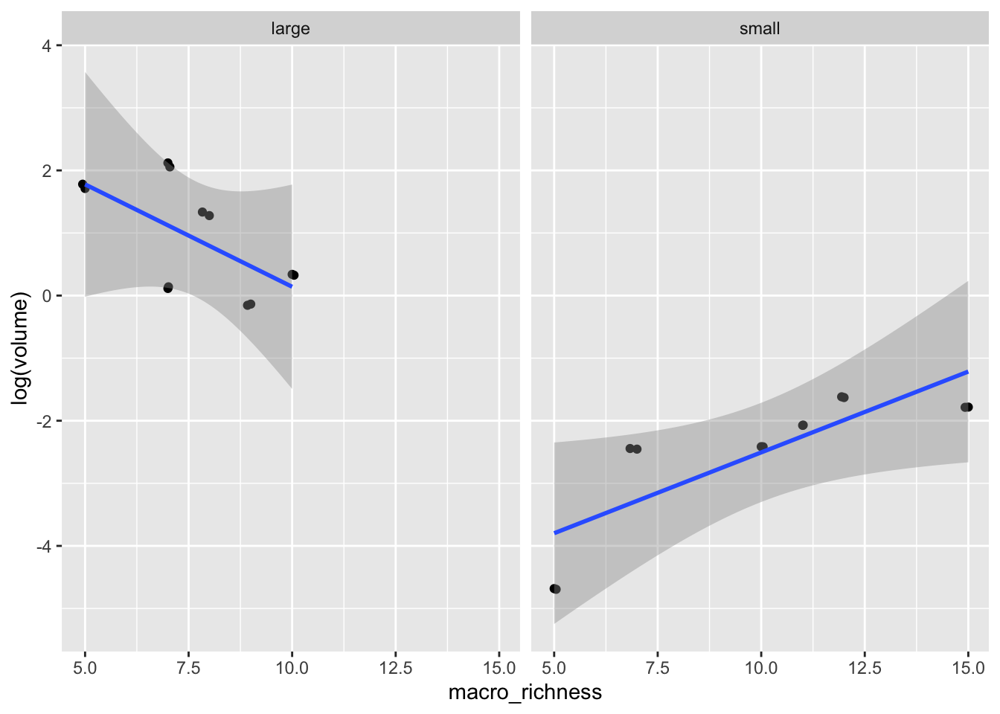

2c. How many rows does the tidepool metadata set have?
Answer: 12
Question 3
3a. What is the atomic data type of tide pool size? How many tide pool sizes are there?
class(data$TidePoolSize)
[1] "character"
Answer: “Character”; A dichotomous categorical variable, including Large and Small tidepools
3b. Rename the tidepool metadata object (if you haven’t already) usingsnake_caseconvention.
tide_pool_data <-read.csv("metadata_tidepool.csv") # new name should be descriptive and lowercase
3c. Rename all variables in your new tide pool data frame to matchsnake_caseconventions.
names(tide_pool_data) <-c("pool_number", # all columns should be using all lowercase"volume", "tide_pool_size", "macro_shannon_sessile","macro_shannon_mobile","macro_shannon_mean","macro_richness","macro_autotroph","macro_heterotroph")
Question 4
Use code to install the tidyverse and dplyr packages in the console; Load the packages into your working session.
library(tidyverse) # if this step is done consecutively, awesome! If not, no worries
── Attaching core tidyverse packages ──────────────────────── tidyverse 2.0.0 ──
✔ dplyr 1.2.1 ✔ readr 2.2.0
✔ forcats 1.0.1 ✔ stringr 1.6.0
✔ ggplot2 4.0.3 ✔ tibble 3.3.1
✔ lubridate 1.9.5 ✔ tidyr 1.3.2
✔ purrr 1.2.2
── Conflicts ────────────────────────────────────────── tidyverse_conflicts() ──
✖ dplyr::filter() masks stats::filter()
✖ dplyr::lag() masks stats::lag()
ℹ Use the conflicted package (<http://conflicted.r-lib.org/>) to force all conflicts to become errors
library(dplyr)
**Note: This would normally be done at the beginning of any real working script. Ensure that all package installations take place before any commands are run. For the sake of our learning here, we’re installing it later into our script.
Question 5
5a. Filter the tide pool data to only include large tide pools with a macro richness that is >= to 7.
5b. Filter the Palmer penguins data set to only include male penguins that were measured in every year except 2007 on Biscoe island (HINT: try using the ! logical operator to exclude 2007).
filter(penguins, !year %in%2007& sex =="male"& island =="Biscoe")
6a. How could you use arrange() to sort all missing values to the start? Write a line of code that sorts the missing values (NAs) for sex in the penguins data set to the start. (HINT: try using is.na()).
arrange(penguins, desc(is.na(sex)))
# A tibble: 344 × 8
species island bill_length_mm bill_depth_mm flipper_length_mm body_mass_g
<fct> <fct> <dbl> <dbl> <int> <int>
1 Adelie Torgersen NA NA NA NA
2 Adelie Torgersen 34.1 18.1 193 3475
3 Adelie Torgersen 42 20.2 190 4250
4 Adelie Torgersen 37.8 17.1 186 3300
5 Adelie Torgersen 37.8 17.3 180 3700
6 Adelie Dream 37.5 18.9 179 2975
7 Gentoo Biscoe 44.5 14.3 216 4100
8 Gentoo Biscoe 46.2 14.4 214 4650
9 Gentoo Biscoe 47.3 13.8 216 4725
10 Gentoo Biscoe 44.5 15.7 217 4875
# ℹ 334 more rows
# ℹ 2 more variables: sex <fct>, year <int>
6b. In the tide pool data frame, arrange the observations in descending order by the macro Shannon mean and the macro richness.
7a. Create a sub-set of the tidepool data that only includes the pool number, Shannon’s diversity metrics for macro sessile and mobile organisms, and the macro richness.
(tide_pool_subset <-select(tide_pool_data, # bonus if each line (yay tidy code practices!!) pool_number, macro_shannon_sessile, macro_shannon_mobile, macro_richness))
What effect does this have to the work we’ve already done to the data set?
Answer: It un-writes any previous changes made, specifically with sorting and renaming of variables
8b. Re-name the tidepool data frame object using snake_case once again (if you didn’t already do so during re-import). Using dplyr and the rename() command, rename all the columns in the tidepool metadata using snake_case. Be sure to save this in a new data frame object.
tide_pool_data <-rename(tide_pool_data, # df can be renamed, or overwrite previous dfpool_number = Pool_number,volume = Volume,tide_pool_size = TidePoolSize,macro_shannon_sessile = macro_Shannon_sessile,macro_shannon_mobile = macro_Shannon_mobile,macro_shannon_mean = macro_Shannon_mean,macro_richness = macro_Richness,macro_autotroph = macro_Autotroph,macro_heterotroph = macro_Heterotroph)
Question 9
Using the tidepool metadata sub-set you created in question 7, add together the Shannon’s Diversity for both sessile and mobile macroscopic organisms. Name this new variable appropriately.
10a. Using the tidepool metadata, group by tide pool size and get the mean Shannon’s diversity of both the mobile and sessile macro-organisms. Save this in a new data frame object (a tibble) and name it appropriately.
# A tibble: 12 × 5
# Groups: tide_pool_size [2]
macro_shannon_sessile macro_shannon_mobile tide_pool_size mean_mobile
<dbl> <dbl> <chr> <dbl>
1 0.813 0.564 large 0.600
2 0.688 0.854 small 0.849
3 1.78 0.521 large 0.600
4 0.943 1.28 small 0.849
5 1.52 0.922 small 0.849
6 0.903 0.546 large 0.600
7 0.666 0.435 large 0.600
8 1.54 0.636 small 0.849
9 1.07 0.632 large 0.600
10 1.68 0.903 large 0.600
11 0.846 0.618 small 0.849
12 2.09 0.781 small 0.849
# ℹ 1 more variable: mean_sessile <dbl>
10b. Using the penguins data, create a new sub-set that only includes Chinstrap penguins and their bill measurements. Get the mean of the bill measurements in each year the penguins were measured.
penguins_bills <- penguins %>%select(species, bill_length_mm, bill_depth_mm, year) %>%filter(species =="Chinstrap") %>%group_by(year) %>%# important to group by AFTER filteringmutate(mean_bill_length =mean(bill_length_mm),mean_bill_depth =mean(bill_depth_mm))
Question 11
11a. Create a scatter plot using the tidepool metadata exploring the macro richness and tidepool volume. Then, create another scatter plot an additional geom_ call to prevent overplotting.
ggplot(tide_pool_data, aes(x = macro_richness, y = volume)) +# doesn't matter what order x/y is ingeom_point()
ggplot(tide_pool_data, aes(x = macro_richness, y = volume)) +geom_point() +geom_jitter() # student should add geom_jitter() call to second plot, better if comments to the code are added

11b. Create a bar plot showing the macro richness by tidepool size.
(HINT: you will need to use the argument stat = 'identity' in your geom_ call).
11c. Use the?geom_barhelp command to pull up the help page for thegeom_bar()command. Spend a little bit of time reading. You can also look at?geom_col.
?geom_bar?geom_col
Why do we need to use thestat = 'identity'argument when runninggeom_bar()?
Answer: It leaves the data as is, rather than simply counting the number of cases for the x axis.
11d. What would happen if we don’t add stat = ‘identity’? Test it out in the console.
Answer: The bar graph won’t run, given that stat_count() requires an x or y aesthetic. Can’t compute first layer.
Question 12
Using the tidepool metadata, create a scatter plot that shows the relationship between the sessile and mobile macro-organisms Shannon diversity colored by tidepool size.
ggplot(data = tide_pool_data, aes(x = macro_shannon_mobile, y = macro_shannon_sessile, color = tide_pool_size)) +# better is color layer is on seperate linegeom_point()

Question 13
Using the penguins data set, create a scatter plot faceted by species and island that explores the relationship between bill depth and bill length. Add additional aesthetic mappings as wanted or needed.
Warning: Removed 2 rows containing missing values or values outside the scale range
(`geom_point()`).

Question 14
Using the penguins data set and a pipe string, create a scatter plot faceted by species and sex that explores the relationship between bill depth and body mass only in the year 2007.
penguins %>%drop_na() %>%# this should be included!!!!!!!filter(year %in%c(2007)) %>%# can also be 'year == 2007'ggplot(aes(x = bill_depth_mm, y = body_mass_g, color = species, shape = sex)) +# additional aesthetics encouragedgeom_point() +facet_wrap(species ~ sex) # can be in either order

Question 15
Using the tidepool metadata, explore the relationship between macro organism richness and tide pool volume between the two tide pool sizes (large and small). Fit a linear regression line to visualize the linear relationship between y ~ x.
ggplot(data = tide_pool_data, aes(x = macro_richness, y =log(volume))) +# log should be on volume axisgeom_point() +geom_jitter() +facet_wrap(~ tide_pool_size) +# step needs to come BEFORE smoothgeom_smooth(method ='lm') # can include se if wanted
`geom_smooth()` using formula = 'y ~ x'

(HINT: Notice the slopes of your lines. How might you better visualize this? Figuring this one out might be tricky and will involve you using the mathematical operator log() on one of the axis. You can do so without piping using dplyr commands OR altering the data frame itself).